23° / 18°Chelder, wat ochtendmist tot ca. 10:00, verder rustiggemeten, Porto-Francisco Sá Carneiro
Geluncht in het hotel (Forte de Gaia). Stadswandeling met Philip, de Nederlandse gids (Beleef Porto). 's Avonds gegeten in restaurant Renata van het hotel (Forte de Gaia).
Renata is in september 2025 herboren uit het vorige hotelrestaurant "Dona Maria", dat zijn recepten baseerde op het kookboek van de 18e-eeuwse koningin Maria I — de nieuwe naam en kaart mengen die Portugese traditie met wereldse invloeden.
| — nog in te vullen — | €0,00 |
| Totaal dag 1 | €0,00 |
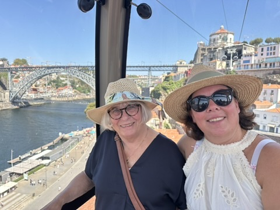
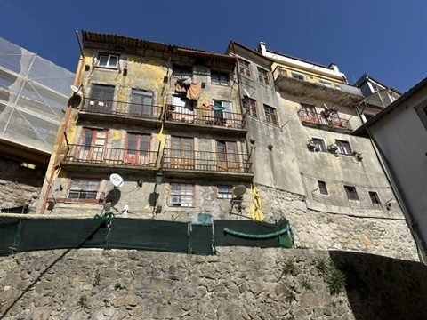
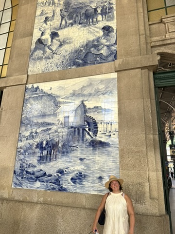
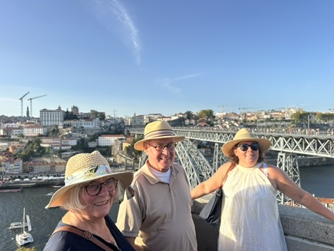
23° / 14°Chelder, kortstondig lichte mist vroeg in de ochtendgemeten, Porto-Francisco Sá Carneiro
Laat ontbeten, dus geen aparte lunch. Boottocht op de Douro. Gerelaxt bij het zwembad van het hotel. Portproeverij bij Churchill's. 's Avonds gegeten bij Escondidinho — sinds 1931 een Porto-instituut, dat in 1936 als eerste Portugese restaurant twee Michelinsterren kreeg.
| — nog in te vullen — | €0,00 |
| Totaal dag 2 | €0,00 |
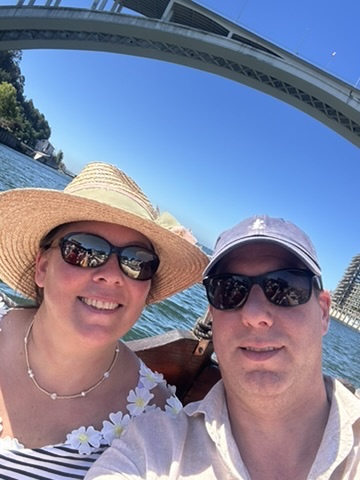
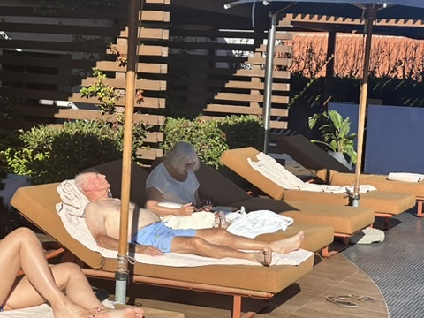
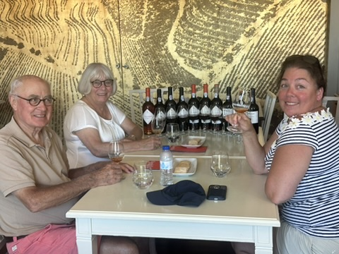
23° / 15°Cwisselend bewolkt, in de avond lichte regen/motregengemeten, regionale proxy Porto (geen eigen station Amarante)
Laat ontbeten, dus geen aparte lunch. Van Porto naar Amarante gereden, via Marco de Canaveses. Daarna een wandeling door Amarante gemaakt en de Igreja de São Gonçalo bezocht. Bij Cafetaria da Ponte lokale zoetigheden geproefd. 's Avonds gegeten bij het Michelin-ster restaurant Largo do Paço (chef Francisco Quintas), met het degustatiemenu "Experiência gastronómica 13 momentos" — 13 gangen.
Amarante staat bekend om zijn "doces fálicos" (ook wel "colhões de São Gonçalo" genoemd) — fallusvormig gebak met een oorsprong die verder teruggaat dan het christendom, verweven met oude vruchtbaarheidsrituelen. De heilige (officieel: zalige) Gonçalo, patroon van koppelbemiddeling, stierf op 10 januari 1259; op die dag én tijdens het grote junifeest ter ere van hem bieden jongens deze zoetigheden traditioneel aan meisjes aan als een niet al te subtiele avance. Vrouwen wreven vroeger tegen zijn graf voor een huwelijkszegen, mannen voor vruchtbaarheid.
| — nog in te vullen — | €0,00 |
| Totaal dag 3 | €0,00 |
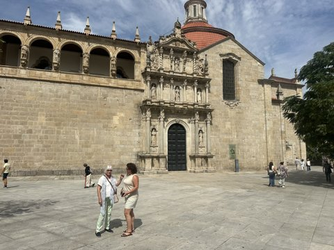
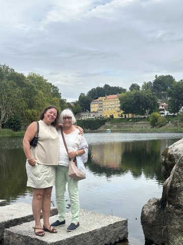
24° / 12°Chelder en drooggemeten, regionale proxy Chaves (geen eigen station Douro-vallei/Pinhão)
Geluncht in de bistro van Casa da Calçada. Dagtrip door de Douro-vallei. Wijnhuis Niepoort bezocht — een portwijnhuis met Nederlandse wortels, opgericht in 1842 door Franciscus Marius van der Niepoort — met een rondleiding langs de vatenkelder en uitzicht over de terrasvormige wijngaarden. 's Avonds gegeten in de bistro van Casa da Calçada, op het terras — onder meer arroz de pato uit de oven (traditioneel Portugees eendenrijstgerecht) geproefd.
| — nog in te vullen — | €0,00 |
| Totaal dag 4 | €0,00 |
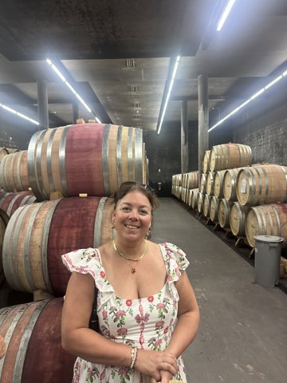
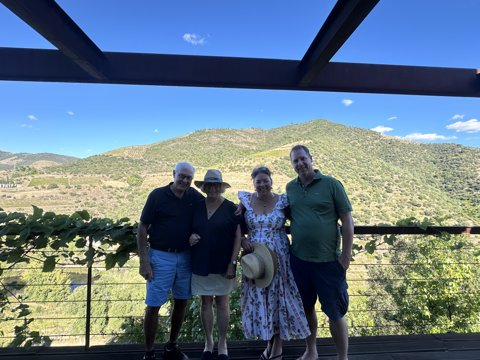
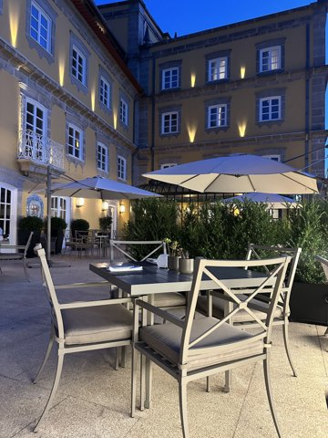
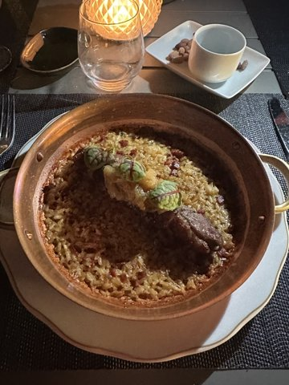
22° / 12°Chelder, lichte mist vroeg in de ochtendgemeten, regionale proxy Ovar/Maceda (geen eigen station Aveiro)
Rondvaart gemaakt door Aveiro, met een traditionele moliceiro-boot door de kanalen van het "Portugese Venetië". Ook langsgelopen bij de reuzenletters "AVEIRO" op de jaarlijkse Feira do Livro (boekenmarkt). Geluncht bij O Cantinho Restaurante. 's Avonds gegeten bij Mercantel, een gevestigd (50 jaar oud, in 2023 gerenoveerd) restaurant in het historische Cais dos Mercantéis.
De moliceiro is een sierlijke, grenenhouten boot met gekrulde punten, die vanaf de 18e eeuw werd gebruikt om zeewier (moliço) uit de Ria de Aveiro te oogsten als meststof voor het land. Toen kunstmest die functie overnam, dreigden de boten te verdwijnen — sinds de jaren 80 varen ze als toeristenboot door de kanalen, beschilderd met kleurrijke (en soms guitige) taferelen.
| — nog in te vullen — | €0,00 |
| Totaal dag 5 | €0,00 |
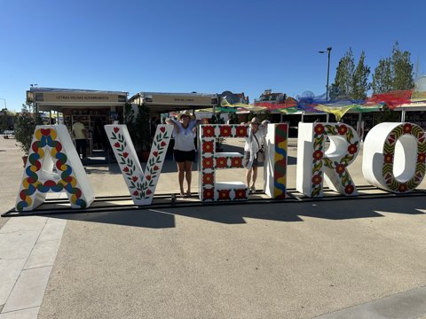
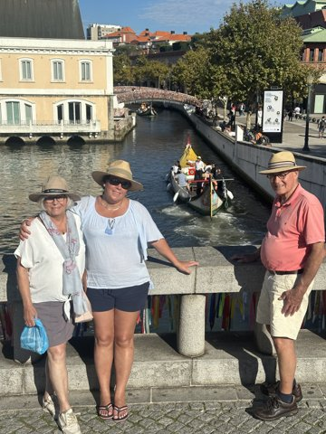
26° / 13°Chelder en drooggemeten, regionale proxy Monte Real/Leiria
Het klooster van Batalha bezocht, daarna doorgereden naar het strand van Nazaré. Alcobaça (en het klooster daar) hebben we deze dag overgeslagen. Geluncht bij Burger King.
's Avonds aangekomen in Óbidos. Per ongeluk de ommuurde binnenstad ingereden via de Porta da Vila — de hoofdpoort met een haakse bocht en blauw-witte tegelpanelen uit 1740, gebouwd voor voetgangers en karren, niet voor auto's. Een hele uitdaging om er met de huurauto (een BMW X3, die er al vanaf dag 1 bij was) weer uit te komen. 's Avonds gegeten bij Realmente, een restaurant en cervejaria middenin de muren, met terrasjes verscholen in bloemrijke steegjes en binnenplaatsen.
| — nog in te vullen — | €0,00 |
| Totaal dag 6 | €0,00 |
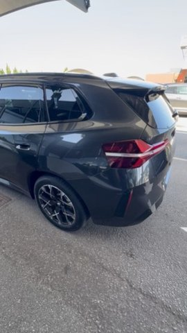
31° / 17°Cveel zon, warm, wind NNW 10-15 km/uverwachting voor vandaag, Óbidos
Nog aan te vullen wat jullie dag 7 in Óbidos gedaan hebben. Geluncht bij Nata Lisboa (Óbidos). 's Avonds gegeten bij Nova Casa de Ramiro.
| — nog in te vullen — | €0,00 |
| Totaal dag 7 | €0,00 |
Nog geen foto's — zet bestanden in images/logboek/dag-07/ en voeg hier <img>-tags toe.
33° / 20°Czonnigverwachting, regio Lissabon (dichtstbijzijnde stationsdata)
Dagtrip naar Mafra en Sintra. Het Palácio Nacional da Pena bezocht, met een tijdslot voor het paleis om 11:30. Geluncht bij Incomum (Luís Santos) bij het station van Sintra, zoals gepland — chef Luís Santos begon zijn carrière op zijn achttiende als keukenhulp in Zwitserland en opende Incomum in 2014 in het centrum van Sintra — en daarna queijadas de Sintra gehaald bij bakkerij Piriquita. 's Avonds gegeten in het Memmo-hotel, een boetiekhotel in de Alfama vlakbij de kathedraal en het Castelo de São Jorge, bekend om zijn dakterras met uitzicht over de Taag.
| — nog in te vullen — | €0,00 |
| Totaal dag 8 | €0,00 |
Nog geen foto's — zet bestanden in images/logboek/dag-08/ en voeg hier <img>-tags toe.
32° / 20°Czonnigverwachting, Lissabon
Wandeltocht door Lissabon met gids Gino ("Mijn Lissabon"), gedeeltelijk ook per tuktuk, vanaf de Praça Luís de Camões richting Alfama. Geluncht bij A Muralha, een tasca típica in Alfama. 's Avonds gegeten in het Memmo-hotel.
| — nog in te vullen — | €0,00 |
| Totaal dag 9 | €0,00 |
Nog geen foto's — zet bestanden in images/logboek/dag-09/ en voeg hier <img>-tags toe.
31° / 19°Czonnigverwachting, Lissabon
Geluncht bij Time Out Market Lisboa — de foodhal opende in mei 2014 in de historische Mercado da Ribeira, met zo'n 36 kraampjes van onder meer Lissabonse topchefs, en trekt inmiddels zo'n 4 miljoen bezoekers per jaar; het concept is intussen ook naar steden als New York en Miami geëxporteerd. 's Avonds geen diner meer — dan zitten we alweer in het vliegtuig terug naar huis.
| — nog in te vullen — | €0,00 |
| Totaal dag 10 | €0,00 |
Nog geen foto's — zet bestanden in images/logboek/dag-10/ en voeg hier <img>-tags toe.